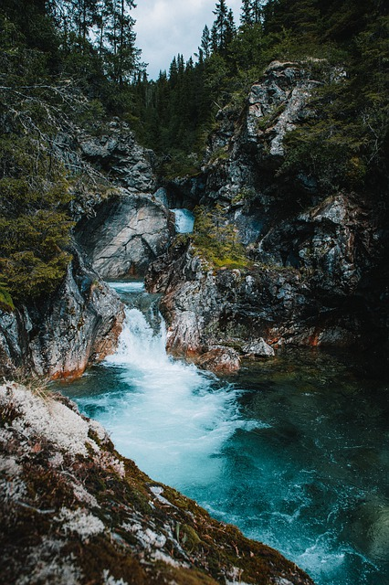

Этот северный край может красотой своей природы затмить многие тропические страны и популярные курорты. Ни один турист этой скандинавской страны не оставят равнодушным потрясающие фьорды, сверкающие на солнце ледники, бескрайние леса и бурные водопады. Кроме великолепных видов природы, Норвегия будет вас покорять наследием викингов, самобытной современностью, зимними видами спорта, рыбной ловлей, достопримечательностями больших городов, рыбацких посёлков, мясом китов, оленино, лососем и соусами из можжевельника. Для многих наших туристов Норвегия станет настоящим открытием и лучшим сюрпризом.
